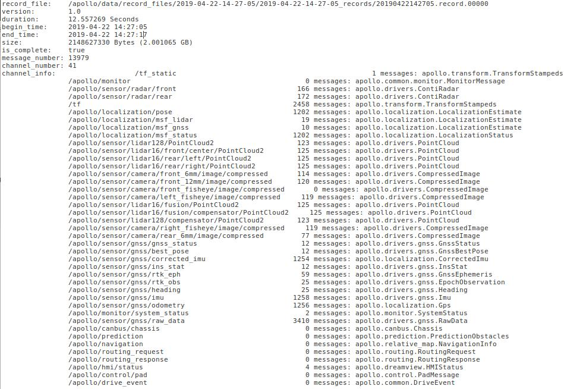

Apollo cyber-record file parser (Python based)
Introduction
This tool presents multiple examples of how to parse data from a record file and
save using predefined format. The tool has been built on example provided within
Apollo (/apollo/cyber/python/examples/).
The samples provided here illustrate cases for, parsing data from:
lidar: based on Velodyne VLS-128
radar: based on Continental ARS-408-21
camera: based on Leopard Imaging Inc’s Camera - LI-USB30-AZ023WDRB
Files and functions:
The files/functions provided are as follows:
record_parse_save.py: main function that parses record files from and saves extracted data to specified locationparse_lidar.py: function to parse lidar dataparse_radar.py: function to parse radar dataparse_camera.py: function to parse camera dataparser_params.yaml: YAML file with details of record-file location, where the output files should be saved and what sensor data should be parsed along with specific channel-names associated with particular sensor, it’s configuration and it’s location.list of channels in a record-file can be obtained using
cyber_recorder info. For example, to get details on a sample record file20190422142705.record.00000saved at:/apollo/data/record_files/2019-04-22-14-27-05/2019-04-22-14-27-05_records/enter following at command prompt:cyber_recorder info /apollo/data/record_files/2019-04-22-14-27-05/2019-04-22-14-27-05_records/20190422142705.record.00000The output on screen will look like that presented in the image below:

Dependency
sudo pip install pyyaml
How-to-use:
It is assumed that the user is within Apollo docker environment and has successfully built it. Please check documentation on Build Apollo if required.
Modify parameters specified within
parser_params.yamlto serve your purpose.After correct parameters are specified in the YAML file, run parser function in
/apollousing:
./bazel-bin/modules/tools/record_parse_save/record_parse_save
parsed sensor data will be saved in new folder along with associated capture or scan timestamps in a text file.
NOTES
In the example setup here, parsed data is saved within the parent folder containing the records-file’s folder. Every saved file has associated timestamp with it.
All record-files within the folder are parsed. If any record file is corrupt, the parser will display error message and continue to next record file.
radardata is saved in text files in JSON format for each scanlidarpoint-cloud data is saved in text files for each scancameraimages are saved in jpeg file for each captureAll timestamps are saved in a separate file with
timestampsuffix, in the same order in which the parsed files are saved in corresponding folder.